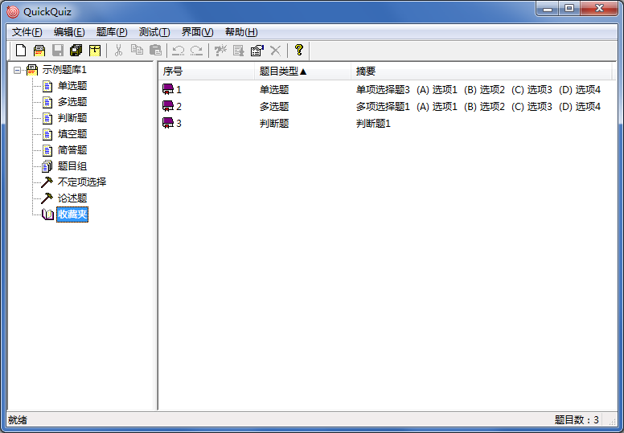

收藏题目
收藏题目

被收藏的题目将在主界面右侧窗格的左端显示一个收藏记号，可以在每个题库内的“收藏夹”中查看全部被收藏的题目。
 | 题目组也可被收藏，视为收藏题目组中全部题目。
在“收藏夹”列表中，仅可以查看题目或取消收藏，不可对题目进行任何编辑操作。 |
|---|
收藏信息保存在收藏夹文件中。收藏夹文件名和题库文件名相同，扩展名*.sav，和题库文件在同一路径时可以自动载入。删除收藏夹文件不会影响题库的正常载入，但会丢失收藏信息。
关闭题库时，应用程序将自动保存收藏夹文件，保存路径和题库相同（不支持修改路径），若没有收藏题目，将不会生成收藏夹文件（若之前创建过收藏夹文件，之后又取消了全部收藏，则收藏夹文件会被删除）。
| 每个题库的收藏夹仅能保存本题库的题目。 |
|---|
GX Software 2020-2021
V2.0